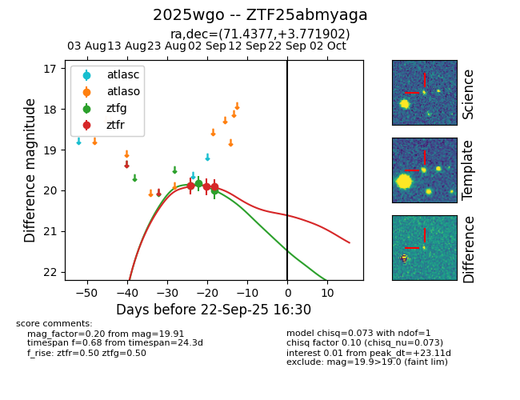
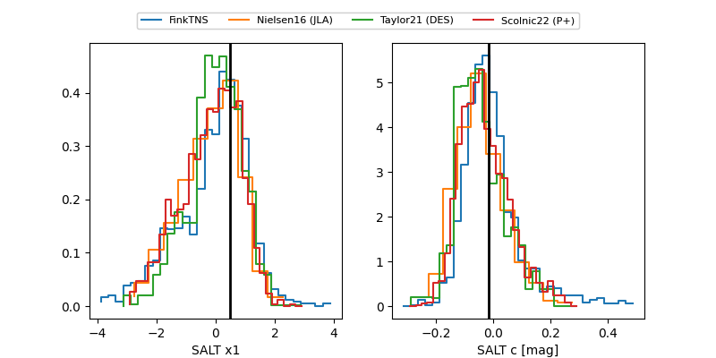

FINK: ZTF25abmyaga
Lasair: ZTF25abmyaga
ALeRCE: ZTF25abmyaga
TNS: 2025wgo
YSE: 2025wgo
ZTF25abmyaga (ztf,fink)
2025wgo (tns,yse)
equatorial (ra, dec) = (71.4377,+3.77190)
galactic (l, b) = (193.7783,-25.65680)


last ztfg=20.00, ztfr=19.91
3 ztfg, 3 ztfr detections